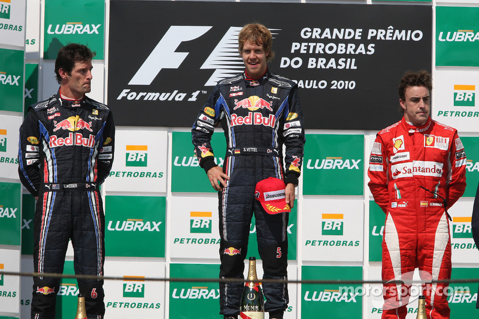

BRASIL
O Grande Prêmio do Brasil (português brasileiro) ou Grande Prémio do Brasil (português europeu) de Fórmula 1 aconteceu pela primeira vez em 1972 e fez parte do campeonato de Fórmula 1 entre 1973 e 2019. Foi realizado em todos os anos no Autódromo José Carlos Pace — mais conhecido como Autódromo de Interlagos — com exceção dos anos de 1978 e de 1981 a 1989, em que as corridas foram disputadas no antigo Autódromo de Jacarepaguá (Autódromo Internacional Nelson Piquet). Após sua edição de 2020 (a última sob contrato com a Fórmula 1[1]) ser cancelada devido à pandemia de COVID-19, o Brasil retornou ao calendário da Fórmula 1 em 2021, mas com o evento realizado em Interlagos passando a ser oficialmente designado de Grande Prêmio de São Paulo.[2][3].
Assim como os circuitos de Bacu, de Marina Bay, o Circuito das Américas e o de Yas Marina, o Grande Prêmio do Brasil era um dos poucos que esteve presente até recentemente no calendário da Fórmula 1 a ter sentido anti-horário.
A última sede do Grande Prêmio do Brasil, o Autódromo José Carlos Pace recebeu inúmeras reformas, melhorias e adaptações ao longo dos seus 76 anos de história. As principais intervenções se deram nos anos de 1979, 1990 e 2000, por conta de adequações às normas de desenvolvimento do automobilismo mundial. Sendo assim, desde a sua inauguração, a extensão original da pista, de 7 960 metros, sofreu algumas alterações. Em 1979, passou a ter 7 873 metros. Já em 1990, a reforma mais abrupta da história do circuito - que trouxe o Grande Prêmio de volta a São Paulo - fez com que a pista diminuísse seu comprimento em 3 548 metros, ficando com 4 325 metros. No ano de 2000, a pista foi adaptada para sua atual extensão de 4 309 metros.[4]
O Grande Prêmio Brasil decidiu títulos nos anos de 2005, 2006, 2007, 2008 e 2009. Índice 1 História 1.1 Anos 70, 80 e 90 1.2 Anos 2000 1.3 Anos 2010 1.4 Anos 2020 2 Nomes oficiais 3 Vencedores do Grande Prêmio do Brasil 3.1 Por ano 3.2 Por pilotos, equipes e países que venceram1 4 Recordes do Grande Prêmio do Brasil 5 Ligações externas 6 Referências
ANOS 2010
Em 2005, pela primeira vez, o GP decidiu o Campeonato Mundial de Fórmula 1, que teve a primeira conquista do espanhol Fernando Alonso. Na temporada de 2006, Alonso tornou-se bicampeão novamente em Interlagos. Felipe Massa foi o vencedor da corrida e quebrou um jejum de 13 anos sem vitórias brasileiras no GP do Brasil.[5] Em 2007 foi a vez do finlandês Kimi Raikkonen vencer o campeonato em Interlagos, ficando a frente do 2º e 3º colocados por apenas um ponto.[6] Em 2 de novembro de 2008, Felipe Massa tornou-se o mais recente vencedor brasileiro do GP, sua vitória na última corrida da temporada daquele ano.[7] Pilotando sua Ferrari, o brasileiro ficou perto de garantir o título da Fórmula 1 em 2008, porém, o britânico Lewis Hamilton, da McLaren, ultrapassou o alemão Timo Glock na última curva da prova e ficou com o título por apenas um ponto, em um dos finais de temporada mais emocionantes da história da categoria.[8] Em 2009, o inglês Jenson Button faturou o campeonato em São Paulo.
Em 2012 foi a vez do alemão Sebastian Vettel ficar com a taça no GP do Brasil e se tornar o mais jovem tricampeão da categoria.[9] O GP do Brasil de 2013 foi a última corrida do piloto australiano Mark Webber na fórmula 1, e como despedida da categoria, ele deu a volta de desaceleração sem o capacete.[10] No treino qualificatório do GP do Brasil de 2014 o piloto alemão Nico Rosberg quebrou o recorde da pole que já durava 10 anos e pertencia a Rubens Barrichello.[11] Em 2015 o GP foi vencido por Nico Rosberg, nesse mesmo ano, a competição apresentou um aumento de público em relação ao ano de 2014. O número total de pessoas que foram ao evento, totaliza 136 410 pessoas[12]
